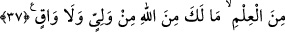

Ruh, kalb ve sır Kur’ân’ın bütününden ferahlanır, hoşlanır. Nefis, hevâ ve kuvveler,
mükellefiyetleri zor buldukları ve bunların faydalarını bilmedikleri için Kur’an’ın bir
kısmını inkâr ederler.
Allah’ım, mükellefiyetlerin zorluklarını üzerimizden kaldır. Kur’an’a hayırla ülfet
edenlerden kıl. Bizi muhâlefet ve inkârdan muhafaza eyle. Kabul ve ikrâr edenlerle
birlikte haşr eyle.
Nasıl ve niçinden dem vurma ki makbul olan kul
Cânânın söylediği sözü can ile kabul eder
Ey Muhammed, bu münkirlere cevâben “de ki: “Bana” indirilen prensiplerde
“sâdece Allah’a kulluk etmem ve O’na ortak koşmamam emredildi.” Dînin esası
budur, sizin bunu inkâr etmeniz mümkün değildir. Kendi şerîatlarınıza muhalif olduğu
için inkâr ettiğiniz esaslara gelince, cüz’î hükümlerde şerîatlar ile kitaplara muhâlif
bulunmak da yeni ortaya çıkan bir şey değildir. Çünkü Allah Teâlâ, tıpkı hastasının
mîzâcına münasip düşen tedavî ve ilaçları kullandıran bir doktor gibi dünyadakilerin
maslahatına olacak hükümler inzâl buyurur.
“Ben” kulları başka bir şeye değil “yalnız O’na” Allah’a ve O’nu birlemeye
“çağırıyorum” Ya da tüm mühim işlerimde yalnızca O’na el açıp duâ ediyorum. “ve”
yaptıklarımın karşılığını almak için benim “dönüşüm de” sizin dönüşünüz de başkasına
değil “yalnız O’nadır.”
İşte bütün peygamberler arasında ittifak sağlanmış husus budur. Bunun dışındaki
teferruata gelince asırlara ve milletlere göre değişen şeylerdendir. Şu halde bu muhalif
olan hususları inkâr etmenin mânâsı yoktur.
37. İşte böylece biz onu Arapça bir hüküm olarak indirdik. Eğer sana gelen bu
ilimden sonra onların arzularına uyarsan, (işte o zaman) Allah tarafından senin ne
bir dostun ne de koruyucun olur.
“İşte böylece” “Böylece seni … bir ümmete gönderdik.” (er-Ra’d, 13/30)
ifadesinde buyrulduğu üzere diğer kitapları peygamberlere kendi milletlerinin diliyle
gönderdiğimiz gibi ya da buna benzer âyetlerdeki meşhur yoruma göre dinlerde ittifakla
sâbit olan esasları içine alacak bir indirişle “biz onu” yâni Kur’an’ı “Arapça bir
hüküm olarak” kavmine kolaylık olsun ve kolayca ezberleyebilsinler diye Arapça
olarak “indirdik.”
Kur’ân, kulların muhtaç oldukları her hususta hikmet ve doğrunun gerektirdiği şekilde
hükmeder. Buna göre âyetteki “hüküm” kelimesi, hükmeden mânâsında bir masdar